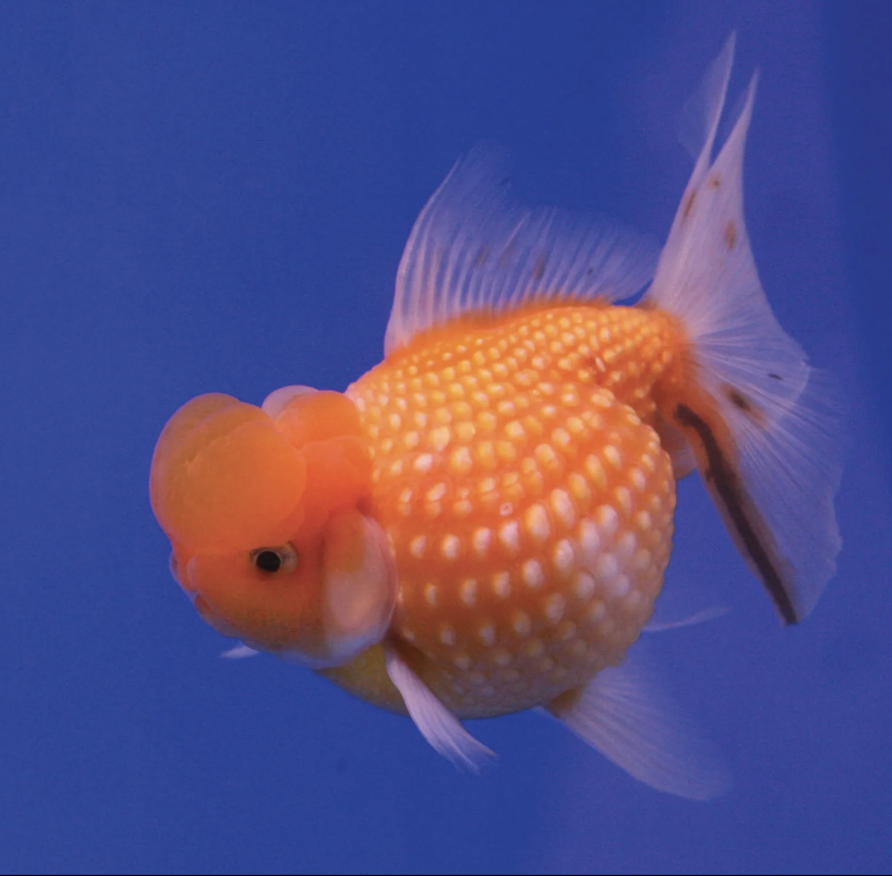
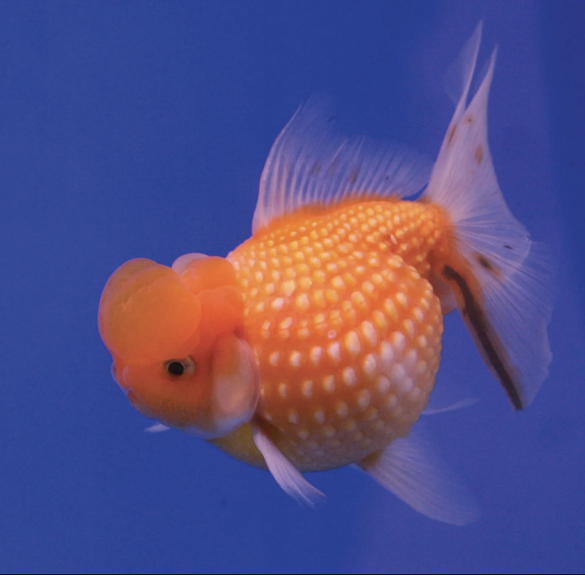

At the Existentialist Café: Freedom, Being, and Apricot Cocktails
 

At the Esistentialist Café: Freedom, Being, and Apricot Cocktails is a book that I really want to read. But I cannot start reading it now because I haven't finish
this book that I'm currently reading.
Redd: Wheein stated that the meaning of the album is "'to tidy up' and 'to get rid of,'
meaning to get out of false tastes and paint...honest colors.
At the Existentialist Café
At the Existentialist Café: Freedom, Being, and Apricot Cocktails is a 2016 book written by Sarah Bakewell that covers the philosophy and history of the 20th century movement existentialism.
The book provides an account of the modern day existentialists who came into their own before and during the Second World War.
The book discusses the ideas of the phenomenologist Edmund Husserl, and how his teaching influenced the rise of existentialism through the likes of Martin Heidegger, Jean Paul Sartre, Simone De Beauvoir, who are the main protagonists of the book.
The title refers to an incident in which Sartre's close friend and fellow philosopher Raymond Aron startled him when they were in a cafe, by pointing to the glass in front of him and stating, "You can make a philosophy out of this cocktail."
Summary
Bakewell structures At the Existentialist Café by focusing each chapter on a particular philosopher or period within the existentialist movement, starting by introducing the early existentialists Kierkegaard, Nietzsche, Dostoevsky and Kafka,
and then moving on to the lives and philosophies of Heidegger, Husserl, Sartre, Beauvoir, Camus, Karl Jaspers, and Merleau-Ponty.
Reviewers Say ..
“It's not often that you miss your bus stop because you're so engrossed in reading a book about existentialism, but I did exactly that while immersed in Sarah Bakewell's 'At the Existentialist Cafe'.” (Katy Guest, The Independent).
“At the Existentialist Café takes us back to…when philosophers and philosophy itself were sexy, glamorous, outrageous;
when sensuality and erudition were entwined… Vivid, humorous anecdotes are interwoven with a lucid and unpatronising exposition of their complex philosophy… Tender, incisive and fair.” (Jane O'Grady, Daily Telegraph)
“Both warm and intellectually rigorous … Perhaps the aphorism that best captures the book is one of Bakewell's own: 'Thinking should be generous and have a good appetite.'” (Julian Baggini, Financial Times)
What Time Is It Now?